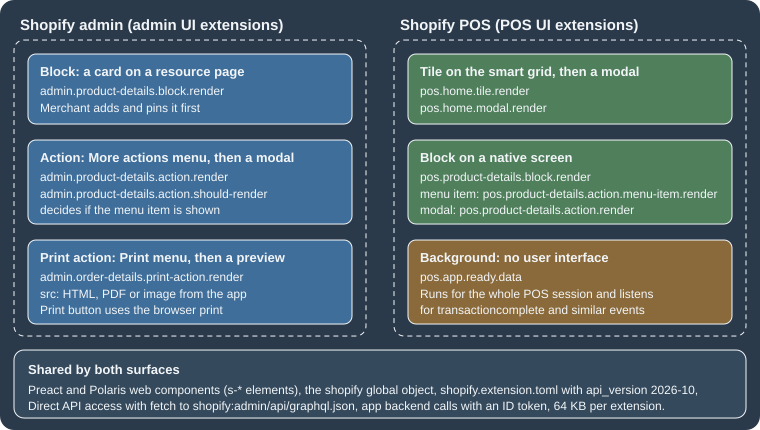
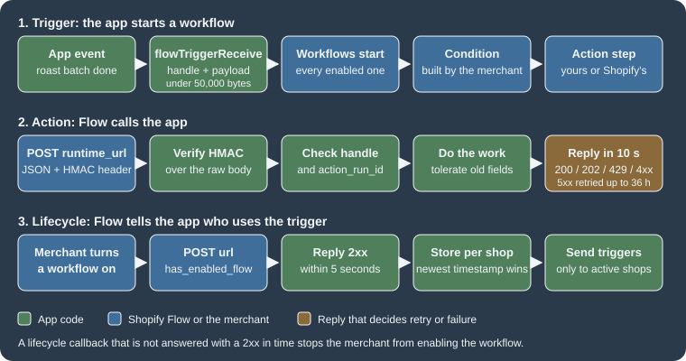

Flow, POS and Admin Extensions
|
This content was generated with the assistance of AI and should be verified against the official documentation before being relied on in production. |
This page was written against Shopify CLI 5.0.0, the Admin UI extensions and POS UI extensions API version 2026-10 (the
latest stable version, released on 2026-10-01) with the npm package @shopify/ui-extensions in its 2026.10 line (2026.10.2
was the newest release on npm; the offline runs below used 2026.10.0), Preact 10.29, the Shopify Flow app and its
extension types as documented on 2026-10-27, @shopify/shopify-app-react-router 3.0.2 (the version the public app
template installs; 4.0.0 is the newest release) and @shopify/shopify-api 15.0.1. It was checked on 2026-10-27.
Flow is an optional app that merchants on any paid plan can install; a Flow extension shipped by a custom app is
available only to a Shopify Plus store (and to development stores on the Plus plan) that has that app installed. Admin UI
extensions and POS UI extensions are part of the app, so the pages consulted state no plan restriction for them; POS UI
extensions need a store with Shopify POS to be useful and a device that runs the Shopify POS app.
Most of what an app does for a merchant happens outside the app: in the admin pages the merchant already uses, at the register in the shop, and in the automations the merchant builds in Flow. Shopify calls the units of code that put an app there app extensions, and this page covers the three families that extend those places: Shopify Flow extensions (a trigger that starts a workflow, an action that a workflow calls, a callback that tells the app which shops use its triggers, and a template that ships an example workflow), admin UI extensions (a card on a resource page, a modal behind the More actions menu, a print preview behind the Print menu) and POS UI extensions (a tile on the smart grid, a block on a native POS screen, a modal, and a background target that renders nothing). It follows the page on apps and scaffolding, which introduced the extension families and the CLI, and the page on App Home, Polaris and App Bridge, whose Polaris web components, ID tokens and direct API access are reused here. The checkout surfaces are covered in Checkout Extensibility, the Function types in Shopify Functions, and theme app extensions and web pixels in Theme App Extensions and Web Pixels.
The running example is the Pocket Coffee shop. A roastery system tells Flow when a roast batch is finished (a custom trigger); a Flow workflow awards Coffee Club points when a member orders beans (a custom action) and the app keeps the points balance; staff set the roast date of each beans product from the product page (an admin action and block) and print a packing slip with roast dates from the order page (a print action); at the register the cashier applies the 10% Coffee Club discount with one tap, sees the roast date and the member’s points, and every completed sale is logged (POS tile, blocks and a background target).
Every extension and server file shown below was written for this page. The ones that can run without a Shopify account were executed (the build of seven UI extensions and four Flow extensions with the CLI, a TypeScript check of every UI extension, the GraphQL documents against the downloaded 2026-10 schema, three Node programs for the Flow endpoints and two React Router routes of the official app template); the parts that need a store, an app registered with Shopify or a POS device were not executed, and the section What was run and what was not lists both groups.
The three families at a glance

Flow extensions are configuration files: the CLI turns the shopify.extension.toml into a definition that Flow shows in
its editor, and the behaviour lives on the app’s server. UI extensions are small JavaScript bundles that Shopify hosts and
renders inside its own interfaces; the code runs in a sandbox, draws with Polaris web components, and reaches the outside
world only through the shopify global object, the Admin API and the app’s backend.
| Family | CLI template ids (shopify app generate extension --template <id>) |
type in shopify.extension.toml |
Needs Shopify review before release | What Shopify hosts |
|---|---|---|---|---|
Flow trigger |
|
|
No |
Only the definition. The app sends events. |
Flow action |
|
|
No |
Only the definition. The app answers HTTPS requests. |
Flow trigger lifecycle callback |
|
|
No |
Only the definition. The app answers HTTPS requests. |
Flow template |
|
|
Yes (Flow team, about three business days; it does not block the app version) |
The exported workflow file and its translations. |
Admin action, block and print action |
|
|
No |
The compiled bundle. |
POS tile, action and block |
|
|
No |
The compiled bundle. |
Source: Shopify: List of app extensions and the template catalogue in Shopify/extensions-templates read on 2026-10-27.
The templates marked _legacy and _pre_release in the catalogue (for example admin_action_legacy) still exist for
the older JavaScript and React flavours, and they are marked as deprecated from CLI version 3.78.2. The plain ids of the UI templates
generate Preact code and require CLI 3.85.3 or later. A project created from them uses @shopify/ui-extensions in the
2026.7.x line in the current templates; this page’s examples use 2026.10.x and api_version = "2026-10", which is
the newest stable version.
What every extension has in common
The extension configuration file
Each extension lives in its own directory below extensions/ (the app’s extension_directories setting, which defaults
to ["extensions/"]) and is described by a shopify.extension.toml file. All extensions of the app are versioned
together with shopify.app.toml as one app version. shopify app deploy creates and releases an app version, a
release replaces the version served to every store that has the app installed, and it can take several minutes before
merchants are upgraded. A previous app version can be restored at any time, and an app version can also be created from
the Dev Dashboard.
Draft versions during development
Running shopify app dev serves the local files to a chosen development store. For UI extensions the preview replaces the
released version in that store only. For Flow extensions the draft version of a task appears in the Flow editor of the
development store in place of the deployed one and carries a "draft" badge, while other shops keep seeing the deployed
version. shopify app dev clean stops the preview and brings back the deployed version. Because shopify app deploy
releases what it deploys, Shopify recommends testing with app dev or with a separate test app first. Both commands need
a login and a development store, so they were not run for this page.
Translations
Every UI extension has a locales directory. en.default.json is the fallback; a file per language (here es.json)
adds a translation, and i18n.translate('key', {name: value}) reads a string for the language of the merchant or staff
member. A value in the TOML such as name = "t:name" is translated with the name key of the same files. Flow
templates use the same layout and add description and preInstallNote. Pocket Coffee’s storefront is Spanish by
default and English second, so every UI extension below ships both files.
Languages, packages and the shopify global
UI extensions are written with Preact (preact 10 and @preact/signals 2 are the template dependencies) and
Polaris web components, the custom elements whose names start with s-. Each extension target receives a shopify
global object that replaces the older pattern of passing an api argument; importing
'@shopify/ui-extensions/preact' once at the top of the entry file enables reactive reads such as
shopify.cart.current.value. If the app uses ESLint, shopify must be added as a read-only global. The CLI writes a
shopify.d.ts next to the TOML during a build, so that the global is typed per target (the file declares the type of
shopify for each module of the extension), and a tsconfig.json with jsxImportSource set to preact completes the
typing. The offline TypeScript check found real mistakes (below), so it is worth running tsc --noEmit in CI.
{
"compilerOptions": {
"jsx": "react-jsx",
"jsxImportSource": "preact",
"target": "ES2020",
"checkJs": true,
"allowJs": true,
"moduleResolution": "Bundler",
"esModuleInterop": true,
"noEmit": true,
"skipLibCheck": true
},
"include": ["src", "shopify.d.ts"]
}Source: Shopify/extensions-templates: admin-action (the include line is an addition: with allowJs and no include, tsc also checks the bundle that the build writes to dist/ and reports hundreds of errors in Preact’s minified code).
Bundle size
The compiled bundle of one UI extension may not exceed 64 KB (128 KB for full-page customer account extensions); Shopify enforces the limit per extension at deploy. The CLI prints the size of every build. The six UI extensions of this page that draw an interface, each including Preact and its hooks, came to between 21.6 KB and 22.8 KB original and between 7.7 KB and 8.2 KB compressed; the background extension, which renders nothing, is 0.6 KB and 0.3 KB. The deployment check itself was not run.
Talking to Shopify and to the app’s backend
There are two ways to get data, and both work from admin and POS extensions.
Direct API access sends a GraphQL Admin API request from the extension with fetch('shopify:admin/api/graphql.json'),
and Shopify authenticates it without a round trip to the app’s server. Every scope that the query needs must be declared in
[access_scopes] of shopify.app.toml; for local development a scope is registered or updated only when the app is
deployed and installed on the test store. Admin UI extensions use the online access token of the signed-in staff member by
default, and direct_api_mode = "offline" under [access.admin] switches to the offline token; the admin
extension shopify.query() helper and the standard fetch behave the same. Direct API access cannot manage storefront
access tokens, and bulk operations (see the page on
bulk operations) are not available through it in admin extensions. In POS it is available from POS 10.6.0 for extensions that
target API version 2025-07 or later.
Authenticated requests to the app use fetch() on a URL below the app’s configured domain. Shopify adds an
Authorization header that carries an OpenID Connect ID token, so the extension never manages tokens; a relative URL is
resolved against the app’s application_url. For a URL on another domain, admin extensions call shopify.auth.idToken()
and add the header themselves, and POS extensions use the Session API to get a token. The app’s server must answer CORS
requests: for admin extensions the origin is https://extensions.shopifycdn.com, and for POS extensions both
cdn.shopify.com and extensions.shopifycdn.com; POS also refuses any request that is not HTTPS. Secrets never belong in
the bundle, which is delivered to the client and can be inspected. The token itself is explained in the page on
authentication and access scopes.
Shopify Flow
Shopify Flow is the automation app of Shopify. A merchant builds a workflow in the Flow editor out of a trigger (an event, for example "order created" or "inventory quantity changed"), optional conditions (rules on the data of the event) and actions (tasks such as "add a tag" or "send an email"). An app joins in by adding tasks of its own, and the merchant then connects them with everything else Flow offers. The documentation names four things an app can build.
| Extension | What it is | Pocket Coffee example |
|---|---|---|
Trigger |
An event of the app that starts workflows. The app sends it with the Admin API mutation |
"Roast batch finished", sent by the roastery system when a batch leaves the roaster. |
Condition |
A rule that decides whether the next action runs. A developer cannot create a condition task; conditions use the data that triggers expose. |
"Batch weight is more than 10 kilograms". |
Action |
A task that Flow runs in the store or in an app. For an app it is an HTTPS POST to the app’s server. |
"Award coffee points" to a Coffee Club member. |
Template |
An example workflow that merchants can copy into their shop from Flow’s template library. |
"Tag fresh beans and award points when a roast batch finishes". |
Building for Flow lets the app connect to the triggers and actions that Flow and other apps already provide, saves the effort of building one integration per partner app, and makes the app discoverable: merchants can find templates even without the app installed, and a listing with Flow integration can show a Works with Flow badge in the Shopify App Store. Flow also has a built-in action that sends an HTTP request and returns data to the workflow, which is the lighter option when a merchant only needs to call an existing endpoint and the app has no reason to appear as a named task.
Source: Shopify: About Flow.

Triggers
A trigger extension declares the shape of an event; the app later sends instances of that event. Nothing is hosted by Shopify except the definition, so there is no server to deploy for the definition itself.
The trigger configuration file
[[extensions]]
name = "Roast batch finished"
handle = "roast-batch-finished"
type = "flow_trigger"
description = "A roast batch of single-origin beans has left the roaster."
schema = "./schema.graphql"
[settings]
[[settings.fields]]
type = "product_reference"
[[settings.fields]]
type = "single_line_text_field"
key = "Origin"
description = "Country and region of the green coffee, for example Ethiopia Yirgacheffe."
[[settings.fields]]
type = "number_decimal"
key = "Batch weight"
description = "Roasted weight in kilograms."
[[settings.fields]]
type = "schema.RoastBatch"
key = "Batch"
description = "The full roast batch record."Source: Shopify: Flow trigger reference.
The extension was built with shopify app build --no-input together with the other extensions of the sample app, and
the build succeeded (the Flow extensions print nothing of their own). Name triggers with an object, then a past-tense
verb ("Auction bid placed"), in sentence case, without punctuation. The properties of are:
| Property | Meaning and rules |
|---|---|
|
The merchant-facing name in the editor. |
|
Always |
|
The unique identifier, alphanumeric characters and hyphens only, unique across the app’s extensions, and fixed once
|
|
Shown in the Flow editor’s navigation panel. The offline build accepted a trigger without a description, so this rule is enforced later, at deploy. |
|
A relative path to a GraphQL schema file with the custom types that fields may use. Required when a field has a
|
Each block adds one piece of data to the event. The order of the blocks is the order in the editor.
Unlike actions, a trigger payload must contain every field the trigger defines.
| Field property | Meaning and rules |
|---|---|
|
A custom field type or a reference field type (tables below). |
|
The identifier of the field in the payload and in the editor’s variable picker. Required for custom types, not valid for
reference types, and limited to letters and spaces (the build rejected |
|
Shown in the editor’s configuration panel. |
Inside the editor a merchant uses the fields as variables in conditions and in the Liquid of action fields. Flow converts
a key to camel case, so Batch weight becomes {{ batchWeight }}.
Field types of a trigger
A reference field lets the app hand Flow the identifier of a Shopify resource; the merchant can then use every property
of that resource, for example customer / tags, in conditions and in actions, without the app sending those properties.
The type is written without a key.
| Reference type (TOML) | Payload key | What the app sends |
|---|---|---|
|
|
The |
|
|
The |
|
|
The |
|
|
The numeric part of the company’s global id, sent as a number ( |
|
|
The numeric part of the company contact’s global id, sent as a number. |
A custom field carries data that exists only in the app.
| Field type | Meaning | Example value |
|---|---|---|
|
A Boolean. |
|
|
An email-formatted string. |
|
|
A string. |
|
|
A number with a decimal point. |
|
|
A URL-formatted string. |
|
|
Any type of the schema file named in |
|
Source: Shopify: Flow trigger reference.
Reference fields send identifiers of Shopify resources as they are known to the older REST naming (legacyResourceId),
so the trigger payload carries plain numbers such as 1234567, whereas an action receives the same customer as a
global id such as gid://shopify/Customer/1234567. The asymmetry is deliberate and easy to trip over.
Sending the event
When something happens in the app, the app calls the GraphQL Admin API mutation flowTriggerReceive with the trigger’s
handle and a payload object whose keys are the field keys of the TOML (and the payload keys of the reference fields).
With API version 2023-07 and earlier the mutation does not support handle and payload; the documentation also lists a
deprecated body argument. The call needs an access token with the scopes of
the data it references (a customer reference requires read_customers). Triggers share the rate limits of the GraphQL Admin
API, so a burst of events is subject to the cost-based throttling described in the page on the
Admin GraphQL API.
mutation FlowTriggerReceive($handle: String, $payload: JSON) {
flowTriggerReceive(handle: $handle, payload: $payload) {
userErrors {
field
message
}
}
}Source: Shopify: flowTriggerReceive.
The mutation validates against the Admin schema for 2026-10 downloaded for this page (the payload type
FlowTriggerReceivePayload has the single field userErrors); a copy with the misspelled field mesage is rejected
with Cannot query field "mesage" on type "UserError". Did you mean "message"?. The variables for the Pocket Coffee trigger
are:
{
"handle": "roast-batch-finished",
"payload": {
"product_id": 1234567,
"Origin": "Ethiopia Yirgacheffe",
"Batch weight": 12.5,
"Batch": {
"id": "B-2026-10-27-ETH",
"roastDate": "2026-10-27",
"level": "LIGHT",
"scores": [86.5, 87, 86]
}
}
}Source: Shopify: Create a Flow trigger.
The payload, keys included, must be smaller than 50,000 bytes. A larger payload is answered with the validation error
Properties size exceeds the limit of 50000 bytes and no workflow starts. The same request as a curl command, with the
shop and the token as environment variables:
curl --location "https://${SHOPIFY_SHOP_DOMAIN}/admin/api/2026-10/graphql.json" \
--header "X-Shopify-Access-Token: ${SHOPIFY_ACCESS_TOKEN}" \
--header "Content-Type: application/json" \
--data '{
"query": "mutation FlowTriggerReceive($handle: String, $payload: JSON) { flowTriggerReceive(handle: $handle, payload: $payload) { userErrors { message field } } }",
"variables": {
"handle": "roast-batch-finished",
"payload": {"product_id": 1234567, "Origin": "Ethiopia Yirgacheffe", "Batch weight": 12.5, "Batch": {"id": "B-2026-10-27-ETH", "roastDate": "2026-10-27", "level": "LIGHT", "scores": [86.5, 87, 86]}}
}
}'Source: Shopify: Create a Flow trigger.
A sender in Node that builds the payload, refuses to send one that is too large and surfaces userErrors follows. It
uses only the built-in fetch; the shop, the token and the API version are parameters.
const MUTATION = `mutation FlowTriggerReceive($handle: String, $payload: JSON) {
flowTriggerReceive(handle: $handle, payload: $payload) {
userErrors { field message }
}
}`;
const LIMIT = 50000; // bytes, keys included
export function buildPayload(batch) {
// Keys of custom fields are the exact "key" strings of the TOML; the product reference uses product_id.
return {
product_id: batch.productId,
Origin: batch.origin,
"Batch weight": batch.weightKg,
Batch: { id: batch.id, roastDate: batch.roastDate, level: batch.level, scores: batch.scores },
};
}
export async function sendRoastBatchFinished(batch, { shop, token, version = "2026-10", fetchImpl = fetch } = {}) {
const payload = buildPayload(batch);
const size = Buffer.byteLength(JSON.stringify(payload));
if (size >= LIMIT) throw new Error(`Payload is ${size} bytes; Flow rejects 50000 bytes or more`);
const res = await fetchImpl(`https://${shop}/admin/api/${version}/graphql.json`, {
method: "POST",
headers: { "Content-Type": "application/json", "X-Shopify-Access-Token": token },
body: JSON.stringify({ query: MUTATION, variables: { handle: "roast-batch-finished", payload } }),
});
if (res.status === 429) throw new Error("Throttled: honour Retry-After and try again");
const json = await res.json();
const userErrors = json.data?.flowTriggerReceive?.userErrors ?? [];
if (json.errors || userErrors.length) throw new Error(JSON.stringify(json.errors ?? userErrors));
return { size };
}The sender was run against a local stand-in for the Admin API on 127.0.0.1 (not Shopify: it only checks the shape of the
request and counts bytes), with the placeholder token <your-access-token>. The output of the run:
payload {"product_id":1234567,"Origin":"Ethiopia Yirgacheffe","Batch weight":12.5,"Batch":{"id":"B-2026-10-27-ETH","roastDate":"2026-10-27","level":"LIGHT","scores":[86.5,87,86]}}
send { size: 171 }
request {"url":"/admin/api/2026-10/graphql.json","token":"<your-access-token>","vars":{"handle":"roast-batch-finished","payload":{"product_id":1234567,"Origin":"Ethiopia Yirgacheffe",...
too large Payload is 80160 bytes; Flow rejects 50000 bytes or moreThe real endpoint was not called, so the behaviour of the trigger in the Flow editor, the payload checks that Shopify performs against the TOML and the start of a workflow are described from the documentation only.
Lifecycle callbacks: which shops use the trigger
Sending every event to every shop that installed the app is wasteful when only a few have an enabled workflow with the trigger. A trigger lifecycle callback tells the app, shop by shop, when the first workflow that uses one of its triggers is turned on and when the last one is turned off. It is its own extension:
[[extensions]]
name = "Roast batch lifecycle"
handle = "roast-batch-lifecycle"
type = "flow_trigger_lifecycle_callback"
url = "/flow/lifecycle-callback"Source: Shopify: Track Flow lifecycle events.
url is required and may be an absolute HTTPS URL or a relative path that starts with a single /. A relative path is
resolved against the development tunnel during shopify app dev and against application_url on deploy, which must then be
HTTPS; protocol-relative URLs such as //example.com/callback are not supported. Relative callback URLs have been
supported since the changelog entry of 2026-10-08. The offline build accepted an http:// URL for the callback, so that
rule is checked later, at deploy. The CLI also writes a uid that must not be edited.
The callback is an HTTP POST with a JSON body and an HMAC header (x-shopify-hmac-sha256; http-x-shopify-hmac-sha256 in
Ruby frameworks), signed with the app’s client secret like a webhook.
| Property | Type | Meaning |
|---|---|---|
|
String |
The identifier of the trigger. |
|
Boolean |
|
|
Number |
The identifier of the store. |
|
String |
The |
|
ISO 8601 date and time |
When the notification was created. A notification older than what the app has stored must be ignored. |
Shopify sends the callback when a merchant turns a workflow on or off. When a merchant tries to enable a workflow, Flow
waits five seconds for a 2xx answer; without it the merchant cannot enable the workflow and is asked to try again later.
That makes the endpoint a gate: it must be fast, it must verify the signature, and it must not fail when it has nothing
to do. A receiver that keeps a table of active shops and applies the timestamp rule:
import http from "node:http";
import crypto from "node:crypto";
const SECRET = process.env.SHOPIFY_API_SECRET ?? "placeholder-client-secret";
const stores = new Map(); // shopify_domain -> { active, timestamp }
function valid(raw, header) {
const expected = crypto.createHmac("sha256", SECRET).update(raw).digest();
const received = Buffer.from(header ?? "", "base64");
return received.length === expected.length && crypto.timingSafeEqual(received, expected);
}
export const server = http.createServer((req, res) => {
const chunks = [];
req.on("data", (c) => chunks.push(c));
req.on("end", () => {
const raw = Buffer.concat(chunks);
if (!valid(raw, req.headers["x-shopify-hmac-sha256"])) return res.writeHead(401).end();
const event = JSON.parse(raw.toString("utf8"));
const previous = stores.get(event.shopify_domain);
// A callback older than what is stored must not overwrite newer information.
if (!previous || Date.parse(event.timestamp) > Date.parse(previous.timestamp)) {
stores.set(event.shopify_domain, { active: event.has_enabled_flow, timestamp: event.timestamp });
}
res.writeHead(200).end(); // answer within five seconds with a 2xx or the merchant cannot enable the workflow
});
});
export const activeStores = () => [...stores].filter(([, v]) => v.active).map(([k]) => k);Source: Shopify: Track Flow lifecycle events.
Run with signed requests from a driver on 127.0.0.1 (the secret placeholder-client-secret is made up):
enable 200 [ 'pocket-coffee.myshopify.com' ]
late disable 200 [ 'pocket-coffee.myshopify.com' ] (older, ignored)
disable 200 []
bad signature 401 []The late disable line is the case the timestamp rule exists for: callbacks can arrive out of order, and applying them in
arrival order would mark an active shop as inactive and silently stop sending it events.
Complex data types
A trigger field or an action result is not limited to strings and numbers. A schema file in GraphQL’s type language (SDL) describes the shape, the TOML points at it, and Flow shows the properties of the object to the merchant. The rules that apply to the file:
-
Flow understands the scalars
String,Int,Float,BooleanandID, enums, object types, lists and the non-null marker!. Unions, interfaces, custom scalars and directives are not supported when defining action return types, and the arguments of fields are not used in the payload. -
The description that the merchant sees for a property is the string above the field in the SDL.
-
One schema file can be shared by several extensions if the relative paths are right.
-
The schema may contain many types that refer to each other, but an action names only one of them as its return type.
The file of the Pocket Coffee trigger and the file of the "Award coffee points" action:
"A roast batch of coffee"
type RoastBatch {
"Batch identifier in the roastery system"
id: ID!
"Date the batch was roasted"
roastDate: String!
"Roast level of the batch"
level: RoastLevel!
"Cupping scores recorded for the batch"
scores: [Float!]!
}
enum RoastLevel {
LIGHT
MEDIUM
DARK
}
"The loyalty balance after an award"
type PointsBalance {
"Customer the balance belongs to"
customerId: ID!
"Total points after the award"
total: Int!
"Loyalty tier of the member"
tier: Tier!
"Points added by this award"
awarded: Int!
}
enum Tier {
BEAN
ROAST
RESERVE
}Source: Shopify: Configure complex data types (the Pocket Coffee types are original).
In a trigger the field gets the type schema.RoastBatch (as in the TOML above) and the payload carries the object. In an
action the TOML sets schema = "./schema.graphql" and return_type_ref = "PointsBalance", and the action’s response
carries the value under return_value, which must match the type: a non-null field that is missing or a field of the wrong
type makes the run fail transiently, and a response above 50 KB does too; transient failures are retried at increasing
intervals for up to 24 hours. Both files parse with graphql 16 (buildSchema) and define RoastBatch, RoastLevel,
PointsBalance and Tier. A small checker that validates a return_value against the SDL, written for this page,
illustrates the rule:
import fs from "node:fs";
import { buildSchema, isNonNullType, isListType, isEnumType, isObjectType, getNullableType } from "graphql";
const schema = buildSchema(fs.readFileSync("extensions/award-coffee-points/schema.graphql", "utf8"));
// Check a JSON value against an SDL type: non-null fields present, scalars of the right JS type, enum members known.
function check(type, value, path, errors) {
if (value === null || value === undefined) {
if (isNonNullType(type)) errors.push(`${path}: required but missing`);
return;
}
const t = getNullableType(type);
if (isListType(t)) return Array.isArray(value) ? value.forEach((v, i) => check(t.ofType, v, `${path}[${i}]`, errors)) : errors.push(`${path}: expected a list`);
if (isEnumType(t)) {
const names = t.getValues().map((v) => v.name);
if (!names.includes(value)) errors.push(`${path}: ${JSON.stringify(value)} is not one of ${names}`);
return;
}
if (isObjectType(t)) {
for (const [name, field] of Object.entries(t.getFields())) check(field.type, value[name], `${path}.${name}`, errors);
return;
}
const ok = { String: "string", ID: "string", Boolean: "boolean", Int: "number", Float: "number" }[t.name];
if (typeof value !== ok || (t.name === "Int" && !Number.isInteger(value))) errors.push(`${path}: expected ${t.name}`);
}Four values were checked with it:
valid ok
missing total return_value.total: required but missing
unknown tier return_value.tier: "GOLD" is not one of BEAN,ROAST,RESERVE
float for Int return_value.total: expected IntThis checker approximates Shopify’s validation from the documented rules; it is not Shopify’s code, and what Flow does with a real response was not observed.
Actions
An action is the opposite direction: a step of a workflow that Flow executes by sending an HTTPS POST to the app. The extension declares the step’s configuration fields; the app implements the endpoint. Name actions with a present-tense verb and an object ("Place auction bid"), in sentence case, without punctuation.
The action configuration file
[[extensions]]
name = "Award coffee points"
handle = "award-coffee-points"
type = "flow_action"
description = "Add loyalty points to a Coffee Club member."
runtime_url = "/api/flow/actions/award-coffee-points"
validation_url = "/api/flow/actions/award-coffee-points/validate"
schema = "./schema.graphql"
return_type_ref = "PointsBalance"
[settings]
[[settings.fields]]
type = "customer_reference"
required = true
[[settings.fields]]
type = "order_reference"
[[settings.fields]]
type = "number_integer"
key = "points"
name = "Points to award"
description = "Whole points added to the member balance."
required = true
[[settings.fields]]
type = "multi_line_text_field"
key = "note"
name = "Note for the member statement"Source: Shopify: Flow action reference.
A relative path is the right choice when the endpoint belongs to the app: during shopify app dev the CLI resolves it
against the changing tunnel URL, and on deploy against application_url, which must use HTTPS. An absolute URL is for an
endpoint hosted elsewhere or one that must be the same in every environment. The same two forms apply to validation_url,
config_page_url and config_page_preview_url, but not to the marketing-activity URLs described below. Relative paths
for the action endpoints have been supported since 2026-06-18, and since 2026-07-07 Flow resolves the runtime_url on
every run, so a changed URL reaches existing workflows without the merchant saving them again.
The reference fields of an action, with the scope the app needs for each, and its custom fields:
| Reference type | Payload key | Notes |
|---|---|---|
|
|
Needs |
|
|
Needs |
|
|
Needs |
|
|
Needs |
|
|
Needs |
|
|
The id of an |
|
|
The id of a |
| Custom field type | Rendered in the editor as |
|---|---|
|
A checkbox. |
|
A text field with email validation. |
|
A one-line text field. |
|
A multi-line text field. |
|
A number field with decimals. |
|
An integer field. |
|
A text field with URL validation. |
Source: Shopify: Flow action reference.
The reference field is usually filled for the merchant: when the trigger is "order created", the customer of the order is
already in the workflow, so the customer_reference field pre-selects it. That is why the field is required = true
in the example: for a field that is optional Flow cannot promise that the object exists at runtime and relies on the app’s
own validation, whereas for a required one it checks the workflow while the merchant is building it and reports a trigger
that does not provide a customer.
The request Flow sends
When a workflow reaches the step, Flow posts a JSON payload to runtime_url:
{
"shop_id": "1",
"shopify_domain": "pocket-coffee.myshopify.com",
"action_run_id": "xxxx-xxxx-xxxx-xxxx",
"handle": "award-coffee-points",
"step_reference": "320d4f8a-aaab-40ff-9ed2-2bc079633705",
"properties": {
"customer_id": "gid://shopify/Customer/1234567",
"points": 50,
"note": "First order of the month"
}
}| Property | Meaning |
|---|---|
|
The store id as an integer. |
|
The |
|
An id for this run of the step. Use it as an idempotency key. |
|
The handle of the extension; use it to recognise the action. Requests of some legacy workflows do not carry it. |
|
The id of the step in the workflow. Present only when a custom configuration page is set. |
|
Deprecated identifier (the action’s name). A fallback for legacy workflows that predate handles. |
|
The fields of the step. |
The endpoint must authenticate the request. The signature is an HMAC-SHA256 of the raw body with the app’s client secret, in
the header x-shopify-hmac-sha256 (http-x-shopify-hmac-sha256 in Ruby frameworks), and the check works as for webhooks
(see Webhooks and Events). When handle is present it must also match the
handle of an action the app created; for a legacy request without handle, verify the signature and map only an explicit
allow-list of known action_definition_id values.
What the response means
Flow waits at most 10 seconds for an HTTP status. After that it closes the connection and resends the request later.
| Response | What Flow does |
|---|---|
|
The request is treated as processed. |
|
Accepted but not processed; Flow resends the request at increasing intervals for up to 36 hours. Use |
|
Flow resends at increasing intervals for up to 36 hours. |
|
Flow waits the stated time (seconds or an HTTP date), which counts as a minimum between 5 and 3,600 seconds, plus jitter,
and backs off if several |
Other |
A failure; Flow does not resend. The merchant sees a notification with the raw body of the response, or, when the body
has a |
|
Flow resends at increasing intervals for up to 36 hours. |
Any other status |
A failure; no resend. |
Because Flow can resend a request, action_run_id is the key to idempotency: store it (with the response) in a cache that
expires, and when it reappears return the same answer without repeating the side effect. Awarding points twice because a
202 was retried is exactly the failure this prevents.
An endpoint that runs
The endpoint below uses only the built-in http and crypto modules. It verifies the HMAC over the raw body, recognises the
action by handle (with a legacy fallback), tolerates a workflow saved before the points field existed, answers
repeated values of action_run_id with the stored response, returns a return_value of the declared type and implements the
validation endpoint.
import http from "node:http";
import crypto from "node:crypto";
const CLIENT_SECRET = process.env.SHOPIFY_API_SECRET ?? "placeholder-client-secret";
const HANDLE = "award-coffee-points";
// Requests of workflows saved before handles existed carry only action_definition_id.
const LEGACY_IDS = new Map([["Award coffee points", HANDLE]]);
const balances = new Map(); // customer GID -> points (use a database in production)
const seenRuns = new Map(); // action_run_id -> response body (use Redis or a table with an expiry)
export function verifyHmac(rawBody, header, secret = CLIENT_SECRET) {
if (typeof header !== "string" || header.length === 0) return false;
const expected = crypto.createHmac("sha256", secret).update(rawBody).digest();
const received = Buffer.from(header, "base64");
return received.length === expected.length && crypto.timingSafeEqual(received, expected);
}
function tier(total) {
return total >= 500 ? "RESERVE" : total >= 100 ? "ROAST" : "BEAN";
}
function send(res, status, body, headers = {}) {
res.writeHead(status, { "Content-Type": "application/json", ...headers });
res.end(body === undefined ? "" : JSON.stringify(body));
}
function execute(payload) {
const { customer_id: customerId, points, note } = payload.properties ?? {};
// A workflow saved with an older version of the action can omit fields added later.
const awarded = Number.isInteger(points) ? points : 10;
if (!customerId) return { status: 400, body: { message: "Choose a customer in the action configuration." } };
if (awarded < 1 || awarded > 1000) return { status: 400, body: { message: "Points must be between 1 and 1000." } };
const total = (balances.get(customerId) ?? 0) + awarded;
balances.set(customerId, total);
console.log(` award: ${customerId} +${awarded} (note: ${note ?? "none"})`);
return { status: 200, body: { return_value: { customerId, total, tier: tier(total), awarded } } };
}
export const server = http.createServer((req, res) => {
const chunks = [];
req.on("data", (c) => chunks.push(c));
req.on("end", () => {
const raw = Buffer.concat(chunks); // verify the raw bytes, never a re-serialised copy
const hmac = req.headers["x-shopify-hmac-sha256"] ?? req.headers["http-x-shopify-hmac-sha256"];
if (req.method !== "POST" || !verifyHmac(raw, hmac)) return send(res, 401, { message: "HMAC validation failed" });
const payload = JSON.parse(raw.toString("utf8"));
const handle = payload.handle ?? LEGACY_IDS.get(payload.action_definition_id);
if (handle !== HANDLE) return send(res, 400, { message: "Unknown action." });
if (req.url.endsWith("/validate")) {
// Custom validation: one entry per step, errors keyed by property key.
return send(res, 200, payload.steps.map((step) => ({
step_reference: step.step_reference,
step_errors: [],
properties_errors: Number(step.properties.points) > 1000
? [{ id: "points", message: "Points are limited to 1000 per award." }]
: [],
})));
}
const cached = seenRuns.get(payload.action_run_id);
if (cached) return send(res, 200, cached); // Flow resent the request: do not award twice
const { status, body } = execute(payload);
if (status === 200) seenRuns.set(payload.action_run_id, body);
send(res, status, body);
});
});A driver posted ten requests, signed with the placeholder secret, to the server on 127.0.0.1:
1 first run, 50 points -> 200 {"return_value":{"customerId":"gid://shopify/Customer/1234567","total":50,"tier":"BEAN","awarded":50}}
2 same run id again -> 200 {"return_value":{"customerId":"gid://shopify/Customer/1234567","total":50,"tier":"BEAN","awarded":50}}
3 second run, 60 points -> 200 {"return_value":{"customerId":"gid://shopify/Customer/1234567","total":110,"tier":"ROAST","awarded":60}}
4 old workflow, no points-> 200 {"return_value":{"customerId":"gid://shopify/Customer/1234567","total":120,"tier":"ROAST","awarded":10}}
5 no customer -> 400 {"message":"Choose a customer in the action configuration."}
6 legacy action id -> 200 {"return_value":{"customerId":"gid://shopify/Customer/1234567","total":121,"tier":"ROAST","awarded":1}}
7 wrong handle -> 400 {"message":"Unknown action."}
8 wrong secret -> 401 {"message":"HMAC validation failed"}
9 Ruby-style header name -> 200 {"return_value":{"customerId":"gid://shopify/Customer/1234567","total":122,"tier":"ROAST","awarded":1}}
10 validate, 5000 points -> 200 [{"step_reference":"abc","step_errors":[],"properties_errors":[{"id":"points","message":"Points are limited to 1000 per award."}]}]Run 2 returned the stored answer and did not add points again (the total stayed 50), which is the idempotency rule at work; run 4 shows the tolerance for a payload without the field that was added later. The same logic is available inside the official React Router template, shown after the next section.
The same endpoints in the React Router template
Apps created from the official template (see the page on
apps and scaffolding) do not verify the HMAC by hand.
authenticate.flow(request) checks the signature against the client secret, loads the offline session of the shop, and
returns the parsed payload together with an admin GraphQL client for that shop. With the file-based router the route
file app/routes/api.flow.actions.award-coffee-points.tsx serves /api/flow/actions/award-coffee-points, which is the
runtime_url of the TOML above.
import type { ActionFunctionArgs } from "react-router";
import { authenticate } from "../shopify.server";
// action_run_id -> response body. Use a database table with an expiry in production.
const runs = new Map<string, unknown>();
const balances = new Map<string, number>();
const json = (status: number, body: unknown) =>
new Response(JSON.stringify(body), { status, headers: { "Content-Type": "application/json" } });
export const action = async ({ request }: ActionFunctionArgs) => {
// Verifies the HMAC header against SHOPIFY_API_SECRET and throws a Response when it does not match.
const { payload } = await authenticate.flow(request);
if (payload.handle !== "award-coffee-points") return json(400, { message: "Unknown action." });
const previous = runs.get(payload.action_run_id);
if (previous) return json(200, previous);
const { customer_id: customerId, points } = payload.properties;
const awarded = Number.isInteger(points) ? points : 10; // older workflows may not send points
if (!customerId) return json(400, { message: "Choose a customer in the action configuration." });
const total = (balances.get(customerId) ?? 0) + awarded;
balances.set(customerId, total);
const body = {
return_value: {
customerId,
total,
tier: total >= 500 ? "RESERVE" : total >= 100 ? "ROAST" : "BEAN",
awarded,
},
};
runs.set(payload.action_run_id, body);
return json(200, body);
};Source: Shopify: authenticate.flow and Shopify: Create a Flow action.
The lifecycle callback route has the same shape (flow.lifecycle-callback.tsx, calling authenticate.flow and updating
a map of active shops under the timestamp rule). Both routes type-check against the template with react-router typegen
and tsc --noEmit, and they were executed by calling their action functions with signed Request objects, with a
placeholder client secret and an offline session row of the shop inserted into the template’s SQLite database:
award 50 points -> 200 {"return_value":{"customerId":"gid://shopify/Customer/1234567","total":50,"tier":"BEAN","awarded":50}}
same action_run_id again -> 200 {"return_value":{"customerId":"gid://shopify/Customer/1234567","total":50,"tier":"BEAN","awarded":50}}
award 60 points -> 200 {"return_value":{"customerId":"gid://shopify/Customer/1234567","total":110,"tier":"ROAST","awarded":60}}
old workflow without points -> 200 {"return_value":{"customerId":"gid://shopify/Customer/1234567","total":120,"tier":"ROAST","awarded":10}}
wrong handle -> 400 {"message":"Unknown action."}
bad signature -> 400 Bad Request
no signature header -> 400 Bad Request
lifecycle: enabled -> 200 (active shops: pocket-coffee.myshopify.com)
lifecycle: older disable -> 200 (active shops: pocket-coffee.myshopify.com)
lifecycle: newer disable -> 200 (active shops: none)Two behaviours of @shopify/shopify-app-react-router 3.0.2 matter in practice. An invalid or missing signature throws a
400 response (the log says invalid_hmac or missing_hmac), not the 401 that plain webhook handlers return. And
before the session row existed the very same valid, signed request also ended in 400 (the log said that no session was
found for the shop). Flow treats every 4xx other than 429 as a failure without a resend, so a request that arrives for a
shop that has no offline session, for example after an uninstall, is lost and the merchant sees the raw error.
A custom configuration page
For actions whose settings are too rich for a form of fields (an email editor, a mapping table, a choice that comes from
an external system), the app can embed one of its own pages in the Flow editor. The merchant sees a preview card in the
action’s configuration pane and a button that opens the page in a frame; the page runs with App Bridge, so it is built like
any other embedded page (see App Home, Polaris and App Bridge).
The TOML needs config_page_url, config_page_preview_url and a validation_url; the preview and validation endpoints are
required when a custom configuration page is used.
The preview endpoint receives a POST with shop_id, shopify_domain, handle, step_reference, locale and the step’s
properties, and answers with the data of the card:
{
"label_text": "Coffee Club welcome message",
"text_preview": "Welcome to the Coffee Club: 10% off beans and free shipping above 40 EUR.",
"button_text": "Edit message",
"image_preview": {
"url": "https://example.com/assets/preview.png",
"alt": "Preview of the welcome message"
},
"last_updated_at": "2026-10-27T10:00:00.000Z"
}Only text_preview is required. label_text defaults to "Configuration Page Preview" and button_text to "Edit"; a
button_text longer than 23 characters is truncated; the preview image should be 500 to 600 pixels wide and at most
100 KB; last_updated_at is an ISO 8601 timestamp.
The validation endpoint receives every step of the workflow that uses the action in one request (steps, each with a
step_reference and its properties) and answers with one object per step: step_errors for problems of the whole step and
properties_errors (an id that is the property key and a message) for a field. Property values arrive as strings
except for checkboxes (Boolean) and number fields (integers). A reference to a commerce object arrives as a JSON-encoded
string with two keys: value, any Liquid the merchant typed, and default_value, the path of the object in the workflow
(such as customer.id), which is empty when the workflow does not provide the object; at runtime the property holds the
global id, or null when the object is missing. The endpoint of the Node server above implements this contract.
In the page itself, with App Bridge 4, the app registers an intent to receive the step: intent.type is
gid://flow/stepReference/<step-reference>, intent.data.properties holds the configured properties and
intent.finish() returns the merchant to the action’s pane; the title bar can carry a Done button that calls it.
import { useAppBridge, TitleBar } from '@shopify/app-bridge-react';
import { useEffect, useState } from 'react';
export default function WelcomeMessagePage() {
const shopify = useAppBridge();
const [intent, setIntent] = useState({});
// Receive the step_reference and the properties configured for this step.
useEffect(() => {
const cleanup = shopify.intents.register((incoming) => setIntent(incoming));
return () => cleanup();
}, [shopify]);
const stepReference = intent?.type ? intent.type.split('/').pop() : '';
return (
<>
<TitleBar title="Coffee Club welcome message">
<button variant="primary" onClick={() => intent?.finish?.()}>Done</button>
</TitleBar>
<s-page heading="Welcome message">
<s-text>{stepReference}</s-text>
<s-text>{JSON.stringify(intent?.data?.properties ?? {})}</s-text>
</s-page>
</>
);
}Source: Shopify: Build the configuration UI.
The custom configuration page, the preview endpoint and the App Bridge intent were not executed: they need a running Flow editor. The page above is a reduction of Shopify’s example, and the exact intent API depends on the App Bridge version.
Changing an action after merchants use it
Workflows keep running after a new version of the extension is deployed, so a change must be backward compatible.
-
Adding or removing a field. Existing steps keep sending the fields they were saved with until the merchant opens and saves them again, so the endpoint can receive a payload that lacks a new field or still has a removed one. Since the changelog entry of 2026-07-07 Flow still sends such requests (before, a mismatch failed validation and never reached the server). The endpoint should ignore removed fields, apply defaults to new required fields and return a clear
4xxmessage when it cannot proceed. -
Changing the type of a field. This breaks the existing steps: the value the merchant chose under the old type is not valid for the new one, the run fails before Flow calls the endpoint, and the server cannot detect or repair it. Add a new field and retire the old one, or create a new action extension.
-
Changing an endpoint URL.
runtime_url,validation_url,config_page_urlandconfig_page_preview_urlare resolved dynamically, so a deploy changes them for every active use at once, and each URL takes effect the next time Flow needs that endpoint.
Templates
A template is a workflow that a merchant can copy into the shop from Flow’s template library, and it is the way to show
how the app’s trigger and action fit together. It is built, not written: the developer builds the workflow in the Flow
editor of a development store, exports it as a .flow file, and the template extension ships that file. A .flow file
must not be edited by hand; change the workflow in the Flow app and export it again. Test the workflow thoroughly, import
it into a second store to find shop-specific data, avoid placeholder tag names (use a recommended name or leave the field
empty), and add a workflow note if setup is needed.
The extension has its own directory with a TOML file, the workflow and the translations:
extensions/roast-batch-template/
locales/
en.default.json
es.json
shopify.extension.toml
template.flow[[extensions]]
name = "t:name"
handle = "roast-batch-tag-and-notify"
type = "flow_template"
description = "t:description"
[extensions.template]
categories = ["inventory_and_merch", "loyalty"]
module = "./template.flow"
require_app = false
discoverable = true
enabled = trueSource: Shopify: Flow template reference.
{
"name": "Tag fresh beans and award points",
"description": "When a roast batch finishes, tag the product as fresh and award Coffee Club points.",
"preInstallNote": "Install the Pocket Coffee app and create the Coffee Club customer segment before turning this workflow on."
}Source: Shopify: Create a Flow template.
| Template property | Meaning and rules |
|---|---|
|
Translatable ( |
|
At least one, two recommended at most, from |
|
The path of the exported |
|
When |
|
When |
|
Whether the template is published after approval. Defaults to |
Translations cover name, description, the optional preInstallNote (only when something must be set up before the
workflow can be turned on; remove the key otherwise) and custom step descriptions: put a key in braces as the whole
description of a step in the editor (for example {expressShippingCondition}) and add that key to the locale files.
en.default.json makes English the fallback.
While shopify app dev runs, the dev store’s admin shows the template at /flow/editor/templates/dev for a preview of the
workflow, the template card and the step descriptions. After shopify app deploy the template enters a review queue. The
approval criteria are: the workflow provides value and does not duplicate a template that already exists, is not malicious
and is complete (validation errors for merchant-specific fields left empty are acceptable); the title follows the
convention and all required fields are present; the text is spelled correctly, has a default locale and an English
translation; the Flow testing account flow-connector-testing.myshopify.com has access to every trigger, action and resource
needed to test it, including the app; at most 25 templates per app; the app is public (and listed in the Shopify App Store)
or custom with require_app = true. The Flow team reviews within three business days, and since 2025-02-07 a template
extension no longer blocks the release of an app version, although changes to the template do not show until the review
has finished.
The build of the sample app passed with a placeholder template.flow file, and nothing checked that it was a valid
export, because only the Flow app can produce one. A real template, the preview and the review were not done.
What the offline build checks for Flow extensions
shopify app build --no-input runs without a login and validates the TOML files of the app. On 2026-10-27 each row below
was one modification of the sample app, built separately.
| Change to the sample app | Result of the offline build |
|---|---|
|
Rejected: |
|
Rejected: |
|
Rejected: |
|
Rejected: |
Lifecycle callback with the same handle as the action |
Rejected: |
Template category |
Rejected, with the list of valid categories. |
Trigger field |
Rejected: |
Field |
Accepted. The field type is validated by Shopify, not by the CLI. |
|
Accepted. Parse the SDL in CI (see the checker above) so that this fails early. |
|
Accepted. |
Lifecycle callback |
Accepted. Deploy-time validation is described by the documentation. |
Trigger without |
Accepted, although the documentation marks it as required. |
Extension without a |
Accepted, and the extension is silently ignored (nothing is built or validated for it). |
|
Accepted. Relative Flow URLs resolve against it and need HTTPS at deploy. |
Source: Shopify CLI: app build and the TOML references linked above; results observed with Shopify CLI 5.0.0.
Flow pitfalls
| Pitfall | What to do |
|---|---|
A trigger payload that omits a field |
A trigger payload must contain every field of the trigger. Send every field, use a deliberate default for data that does not exist yet, and keep the TOML and the sender in step. |
Keys with digits or punctuation |
Trigger field keys allow only letters and spaces. Use |
Sending ids in the wrong shape |
A trigger reference field takes the legacy numeric id ( |
Verifying a re-serialised body |
Compute the HMAC over the raw bytes of the request. |
Doing the work before answering |
Flow waits 10 seconds. Answer |
Repeating the side effect on a resend |
Use |
Ignoring older versions of the action |
Treat missing and unknown properties as normal; never change the type of an existing field. |
A slow or failing lifecycle endpoint |
The merchant cannot enable the workflow if the callback is not answered with a |
A custom app on a non-Plus store |
Flow extensions of a custom app are available only to a Plus store or a development store on the Plus plan. |
Changing the handle |
The handle cannot change after |
Testing against the deployed version by accident |
While |
POS UI extensions
Shopify POS is the point-of-sale app that runs on iOS and Android phones and tablets. A POS UI extension adds the app’s functionality directly to that interface: loyalty enrollment at checkout, custom discounts, stock alerts across locations, receipts and documents, customer follow-up. Extensions render as native components, so they load fast, follow Shopify’s design system automatically and look the same on iOS and Android. Because they run in the middle of a sale, the documentation asks developers to give performance priority over everything else.
A POS UI extension is built from three parts: a target that says where it appears, the target APIs that give it data and
operations for that place, and the web components that it can draw. The shopify.extension.toml lists the targets, the
module of each, and a few options.
Targets
A target is a named place in the POS interface. There are three kinds that render something and one that does not.
-
Tile. A button on the smart grid, the home screen, for the actions staff use all day (
pos.home.tile.render). -
Action. A modal or full-screen workflow. It comes as a pair: the
.action.menu-item.rendertarget draws a button in a screen’s action menu, and the.action.rendertarget draws the modal that opens when the button is tapped. Tiles open their modal throughpos.home.modal.render. -
Block. A section drawn inline in a native screen (for example the customer details screen), with an optional button that launches a modal.
-
Background.
pos.app.ready.datastarts when POS loads and lives for the whole session; it renders nothing and listens for POS events.
If the menu-item target is omitted, POS provides a default menu item for the action modal, which is why the generated
pos_action template lists the menu-item target only "for completeness".
| Screen | Targets | Typical use |
|---|---|---|
App background |
|
Transaction sync, cash tracking, session-level state that should update while POS is open. |
Home screen (smart grid) |
|
High-frequency actions, status displays, entry points to workflows. |
Product details |
|
Extra product data, product-specific tools while a sale is built. |
Cart line item details |
|
Line-item customisation, item-level tools. |
Customer details |
|
Loyalty, customer service and engagement tools. |
Order details |
|
Refunds, fulfilment and support for a completed transaction. |
Draft order details |
|
Quotes, approvals, external processing of saved orders. |
Post-purchase |
|
Follow-up after a sale: extra information, service tools, related transactions. |
Register details |
|
Cash drawer operations, cash management, register checks. |
The reference counts 23 targets for the session, storage and other cross-cutting APIs, which matches the list above (one background target plus 22 targets on the eight screens).
Configuration
The app-level shopify.app.toml has a [pos] table with embedded. Set to true it loads the app’s App Home inside
Shopify POS; the sample app leaves it false, and the build rejects a string such as embedded = "no" with
[pos.embedded]: Value must be Boolean.
Source: POS UI extensions: configuration and App configuration.
The shopify global and the target APIs
Which APIs are available depends on the target. The reference groups them in three families.
| Family | API | What it does |
|---|---|---|
Contextual |
Cart, Cart Line Item, Customer, Draft Order, Order, Product |
Read and change the cart (lines, discounts, properties, customer), read the selected line, customer, draft order, order or product (the Product API exposes the product id and the variant id). |
Platform |
Camera, Cash Drawer, Connectivity, Device, Navigation, PinPad, Printing, Scanner, Storage; Print (deprecated) |
Hardware and device features: photos, opening a cash drawer, network status, device id, screen navigation, secure PIN entry, printing to a receipt printer, barcode scanning, local storage with up to 100 entries per extension. |
Standard |
Action, Locale, Product Search, Session, Toast |
Open and dismiss modals, read the locale, search the catalogue, read the POS session and mint session tokens, show toasts. |
Source: POS UI extensions: Target APIs.
Most of these are properties of the shopify global: shopify.storage persists data, shopify.toast.show() shows a
message, shopify.action.presentModal() opens the modal that belongs to a tile or a menu item and dismissModal() closes
it, and shopify.cart, shopify.customer and shopify.product are present for the targets that have that context
(the type of shopify is generated per target). Several APIs are reactive: shopify.cart.current.value returns the
current cart and shopify.cart.current.subscribe(callback) returns an unsubscribe function, so a component can
re-render when the cart changes.
The Storage API keeps key-value data in an isolated namespace on the device across sessions and restarts. API version
2026-10 (changelog of 2026-10-22) adds shopify.storage.current, which exposes every stored key as a read-only signal so
that one target (a background target that stored a loyalty balance) can drive another (a tile that shows it). Values load
asynchronously, so a signal is undefined until its key has loaded.
Web components
The interface is drawn with s- elements that exist for POS. A component that is available for one target may not be
available for another: the TypeScript check of the customer block below rejected s-banner for
pos.customer-details.block.render although the reference lists the banner component for POS.
| Category | Components |
|---|---|
Actions |
|
Feedback and status |
|
Forms |
|
Layout and structure |
|
Media and visuals |
|
Source: POS UI extensions: Web components.
s-pos-list is new in API version 2026-10 and needs Shopify POS 11.17.0 or later: it is a virtualised list whose rows are
laid out by templates, and it replaces the List component of API version 2025-07, which ended there. Mapping a long list
of rows into s-scroll-box makes POS create a view per row, so display time and memory grow with the list and a very
large list can fail to display; s-pos-list recycles the views while the cashier scrolls.
Example: a tile and a modal that apply the Coffee Club discount
The tile lives on the smart grid and is disabled while the cart is empty; the modal applies the 10% discount that the
Coffee Club promises. It does not set runs_offline: the Cart API is not among the APIs that work without a network (see
below), and a tile that depends on the cart should not claim to.
api_version = "2026-10"
[[extensions]]
type = "ui_extension"
name = "t:name"
handle = "coffee-club-tile"
description = "Applies the Coffee Club discount at the register"
[[extensions.targeting]]
target = "pos.home.tile.render"
module = "./src/Tile.tsx"
[[extensions.targeting]]
target = "pos.home.modal.render"
module = "./src/Modal.tsx"{
"name": "Coffee Club",
"tile_heading": "Coffee Club",
"tile_subheading": "10% off beans",
"modal_heading": "Coffee Club discount",
"apply": "Apply 10% Coffee Club discount",
"applied": "Coffee Club discount applied",
"refused": "POS did not apply the discount"
}import '@shopify/ui-extensions/preact';
import {render} from 'preact';
import {useEffect, useState} from 'preact/hooks';
export default async () => {
render(<Extension />, document.body);
};
function Extension() {
const {i18n, cart} = shopify;
// The tile stays disabled until the cart has at least one line.
const [empty, setEmpty] = useState(cart.current.value.lineItems.length === 0);
useEffect(() => {
const unsubscribe = cart.current.subscribe((next) => setEmpty(next.lineItems.length === 0));
return unsubscribe;
}, []);
return (
<s-tile
heading={i18n.translate('tile_heading')}
subheading={i18n.translate('tile_subheading')}
disabled={empty}
onClick={() => shopify.action.presentModal()}
/>
);
}import '@shopify/ui-extensions/preact';
import {render} from 'preact';
export default async () => {
render(<Extension />, document.body);
};
function Extension() {
const {i18n, cart, toast} = shopify;
async function apply() {
try {
// From API version 2026-10 a cart mutation rejects when POS does not confirm the write.
await cart.applyCartDiscount('Percentage', 'Coffee Club 10%', '10');
toast.show(i18n.translate('applied'));
shopify.action.dismissModal();
} catch (error) {
toast.show(i18n.translate('refused'));
}
}
return (
<s-page heading={i18n.translate('modal_heading')}>
<s-scroll-box>
<s-box padding="base">
<s-button onClick={apply}>{i18n.translate('apply')}</s-button>
</s-box>
</s-scroll-box>
</s-page>
);
}Source: Shopify: Build a discount UI extension and Shopify: Getting started with POS UI extensions (Pocket Coffee names and the 2026-10 error handling are original).
shopify app build bundled the extension (22.2 KB, about 7.8 KB compressed) and tsc --noEmit accepted it. It was not
installed on a device. The try/catch is not decoration: from API version 2026-10 the cart mutations (bulkCartUpdate,
removeLineItem, applyCartDiscount, addCartCodeDiscount, removeAllDiscounts, setCustomer, removeCustomer, the
line-item property, discount and selling plan mutations, and the new updateLineItemQuantity) reject unless POS confirms
that the cart changed. Two messages tell the cases apart: "POS refused the cart update. The cart was not changed." (POS
declined the write, for example because the cashier already moved to payment; retrying can succeed once editing is available
again) and "POS could not confirm the cart update." (the outcome is unknown and a partial write is possible, so read the cart
before retrying). In earlier versions the same calls resolved whether or not POS applied the write, so an app could show a
discount that the cart never received. The change applies per extension, by its declared api_version.
Example: a block that shows the roast date, with direct API access
A block draws inline content on a native screen. This one adds a "Roast date" section to the product details screen, reads
the custom.roast_date metafield with a GraphQL Admin API query that the extension sends directly, and has a button that
opens a modal (the action.render target of the same extension). The query needs the read_products scope in
shopify.app.toml.
api_version = "2026-10"
[[extensions]]
type = "ui_extension"
name = "t:name"
handle = "coffee-club-product-block"
description = "Shows the roast date of the product on the product screen"
[[extensions.targeting]]
target = "pos.product-details.block.render"
module = "./src/Block.tsx"
[[extensions.targeting]]
target = "pos.product-details.action.render"
module = "./src/Action.tsx"import '@shopify/ui-extensions/preact';
import {render} from 'preact';
import {useEffect, useState} from 'preact/hooks';
export default async () => {
render(<Extension />, document.body);
};
function Extension() {
const {i18n, product} = shopify;
const [roastDate, setRoastDate] = useState<string | null>(null);
useEffect(() => {
(async () => {
const res = await fetch('shopify:admin/api/graphql.json', {
method: 'POST',
body: JSON.stringify({
query: `query RoastDate($id: ID!) {
product(id: $id) { metafield(namespace: "custom", key: "roast_date") { value } }
}`,
variables: {id: `gid://shopify/Product/${product.id}`},
}),
});
const {data} = await res.json();
setRoastDate(data?.product?.metafield?.value ?? null);
})();
}, [product.id]);
return (
<s-pos-block heading={i18n.translate('block_heading')}>
<s-button slot="secondary-actions" onClick={() => shopify.action.presentModal()}>
{i18n.translate('open_action')}
</s-button>
<s-box padding="large">
<s-text>{roastDate ?? i18n.translate('unknown')}</s-text>
</s-box>
</s-pos-block>
);
}The query validates against the 2026-10 Admin schema. shopify.product.id is a number in POS, so the global id is built
with a template string. The action.render target of the extension (Action.tsx) renders an s-page with the product and
variant ids; its listing is omitted because it only reads shopify.product.
Example: a customer block that calls the app’s backend
When the data does not live in Shopify, the extension asks the app. A fetch to a path of the app’s own domain gets an
Authorization header with an ID token automatically (POS 10.6.0 or later with an extension that targets 2025-07 or later),
and a relative URL is resolved against application_url. The token is null unless the signed-in user is an authenticated
user with the right app permissions, and a POS staff member (a PIN) is not an authenticated user. The server must be on HTTPS and
must allow the origins cdn.shopify.com and extensions.shopifycdn.com.
import '@shopify/ui-extensions/preact';
import {render} from 'preact';
import {useEffect, useState} from 'preact/hooks';
type Balance = {total: number; tier: string};
export default async () => {
render(<Extension />, document.body);
};
function Extension() {
const {i18n, customer} = shopify;
const [balance, setBalance] = useState<Balance | null | 'error'>(null);
useEffect(() => {
if (!customer?.id) return;
// Requests to the app's own domain carry an Authorization header with an ID token automatically.
// A relative URL is resolved against the application_url of the app.
fetch(`/api/club/points/${customer.id}`)
.then((res) => (res.ok ? res.json() : Promise.reject(new Error(String(res.status)))))
.then(setBalance)
.catch(() => setBalance('error'));
}, [customer?.id]);
return (
<s-pos-block heading={i18n.translate('heading')}>
<s-box padding="large">
{balance === null && <s-text>{i18n.translate('loading')}</s-text>}
{balance === 'error' && <s-text>{i18n.translate('error')}</s-text>}
{balance && balance !== 'error' && (
<s-text>{i18n.translate('points', {points: balance.total, tier: balance.tier})}</s-text>
)}
</s-box>
</s-pos-block>
);
}The target is pos.customer-details.block.render. The first version of this file used <s-banner tone="critical"> for the
error state; tsc rejected it with Property 's-banner' does not exist on type 'JSX.IntrinsicElements', and the plain
s-text replaced it. The route /api/club/points/<customer id> is the app’s own and was not implemented here; for a real
route, verify the ID token as described in the page on
authentication and access scopes.
Example: a background target that logs every sale
pos.app.ready.data runs for the whole POS session and draws nothing. It is where an extension subscribes to POS events with
shopify.addEventListener: transactioncomplete (a sale, return or exchange finished), cashtrackingsessionstart,
cashtrackingsessioncomplete and scan. A listener is fire-and-forget: its return value is ignored and its errors do not
affect POS or the other listeners.
api_version = "2026-10"
[[extensions]]
type = "ui_extension"
name = "t:name"
handle = "order-logger-background"
description = "Logs completed POS sales"
[[extensions.targeting]]
target = "pos.app.ready.data"
module = "./src/background.ts"// Runs once when POS loads and stays alive for the whole session; it renders nothing.
export default async () => {
shopify.addEventListener('transactioncomplete', (event) => {
if (event.transactionType !== 'Sale') return;
const total = event.grandTotal;
console.log(`Pocket Coffee: order ${event.orderId ?? 'pending'} completed, total ${total.amount} ${total.currency}`);
});
};Source: Shopify changelog: POS extensions support a background extension target (2026-07-09) and App background target.
The event carries the transaction type, the numeric orderId (undefined while order creation is pending), the customer,
discounts, taxes, subtotal, grandTotal, payment methods, shipping lines and the execution time. The CLI did not write a
shopify.d.ts for this target, so the global was typed with a hand-written declaration of the same shape that the CLI writes
for the other targets, pointing at import('@shopify/ui-extensions/pos.app.ready.data').ShopifyGlobal. With the
declaration tsc accepted the file; with the Api type that the other targets use, tsc reported that addEventListener
does not exist, because the event methods live only on the background global. The log line is Pocket Coffee’s "order
placed" entry (the order number "#1001" is the name field of the order, which a real implementation would fetch with the
orderId).
Offline operation and the other 2026 changes
Since 2026-03-17 a POS UI extension can keep working when the device loses its network, in POS 11.0 and later, if
runs_offline = true is set. Direct API access and app authentication do not work without a network; the Connectivity API
tells the extension which mode it is in. The APIs that work offline are Storage, Locale, Toast, Connectivity, Device,
Scanner, Navigation, Action, PinPad, Cash Drawer and Camera, and the targets that render offline are
pos.home.tile.render, pos.home.modal.render, the three product details targets and the two cart line item targets.
The Cart API is not in that list. The CLI 5.0.0 build accepted a copy of the tile extension with the setting below, and
rejected runs_offline = "yes" with Expected boolean, received string.
[extensions.supported_features]
runs_offline = true| Date | Change |
|---|---|
2026-10-22 |
API 2026-10 adds |
2026-10-07 |
API 2026-10: cart mutations reject unconfirmed writes (see above). |
2026-09-17 |
API 2026-10 removes |
2026-07-27 |
API 2026-07 adds the Printing API: |
2026-07-09 |
The background target |
2026-03-17 |
Extensions can run without network access. |
2026-01-23 |
Localisation support and a camera API. |
2025-03-07 |
Support ended for POS UI extension versions 1.x and 2024-04: from POS 9.31 extensions on those versions no longer work. |
Source: Shopify developer changelog, entries of the dates above, and POS UI extensions: Run extensions without network access.
Testing on a device
Testing needs a development store and the Shopify POS app on any phone or tablet; no dedicated POS hardware is needed.
shopify app dev serves the extension through a Cloudflare tunnel; pressing p in the terminal opens the Dev Console of
the dev store, whose Mobile preview shows a QR code. Scanning it opens POS on the device, which fetches the extension from the
tunnel and shows the tile. Switching networks, a tunnel timeout, locking the device or closing POS can make POS remove the
extension; set the device not to auto-lock, keep POS open, and if the tile disappears tap Remove dev extensions in the POS
Dev Console, stop and restart shopify app dev, press p, and scan a new QR code.
Since API version 2026-04 the package @shopify/ui-extensions-tester supports unit tests for POS (and admin) UI extensions,
with example suites in Shopify’s ui-extensions repository. None of this, the Dev Console, the QR preview or a POS device,
was available for this page, so the UI extensions were built and type-checked but never rendered.
Extension-only and server-hosted POS apps
A POS app can be extension-only: all code runs in the extension on the device and Shopify hosts the bundle, so there is no server at all. That is enough when the extension needs only the Admin API (through direct API access). As soon as it needs to call another Shopify API, integrate an external service or keep a secret or sensitive business logic, the app needs a backend that the extension calls, like the customer block above; POS UI extensions are client-side JavaScript, so the usual client and server rules apply. Extension-only apps can be installed only with custom distribution (see the distribution methods in the page on apps and scaffolding).
Source: Extending Shopify POS with UI extensions and App extensions.
Admin UI extensions
Admin UI extensions put the app inside the Shopify admin pages that staff already use: a card on a product, order or customer page, an entry in the More actions menu that opens a modal, an entry in the Print menu that opens a print preview, a settings panel for a Shopify Function. They are the way to avoid sending the merchant to a separate app page for a small task. Like the other UI extensions they are Preact components drawn with Polaris web components, hosted by Shopify, and connected to Shopify data by direct API access and to the app’s backend by authenticated requests.
The six kinds of target
| Target type | What it does |
|---|---|
Action |
Adds a menu item to the More actions menu of a details or index page. When triggered, the extension renders in a modal. There are two varieties that are used together: render (the menu item and the modal content) and should render (a separate module that decides whether the menu item appears). |
Selection action |
The same on an index page, when the merchant has selected several resources: batch exports, bulk tagging, multi-item processing. |
Block |
An inline card on a resource page. Merchants must add and pin the block to their pages before it appears. A block can launch an action target for a more complex interaction. |
Configuration |
Configuration interfaces for admin features: product and variant configuration (bundles and customizable products) and function settings (discount, validation and order routing Functions). |
Print action |
Adds a menu item to the Print menu on order and product pages. Render and should-render varieties, as for actions. |
Runnable |
Executes code and returns data to Shopify without a UI, for example data for Sidekick or customer segment templates. |
Source: Admin UI extensions: Targets.
The targets by resource, as listed for API version 2026-10 (every action target also has a should-render variant, shown
as "action"; print actions have one too):
| Resource | Targets |
|---|---|
Products |
|
Product variants |
|
Orders |
|
Customers |
|
Draft orders |
|
Collections |
|
Discounts |
|
Companies and catalogs |
|
Gift cards and abandoned checkouts |
|
Function settings |
|
App tools |
|
Source: Admin UI extensions: Targets. The comment list in the generated admin_block template names the company location target admin.company-location.block.render, which differs from the reference’s admin.company-location-details.block.render; the build rejects a target that the installed package does not know, so check the name in the reference for the version in use.
Configuration
An admin extension uses the same shopify.extension.toml structure as a POS extension with type = "ui_extension". The
generated action, block and print templates each define one target, and each template’s comment says only one target can be
specified for that kind. An action can add a [extensions.targeting.should_render] table with a module that decides
whether the menu item is displayed. The documented limits are a name of 5 to 30 characters and a handle of up to 100
characters built from a-z, A-Z, 0-9 and -. The offline build did not enforce those limits: a name of three characters and
two targets in a block extension were both accepted, and the deploy-time checks are described by the documentation.
api_version = "2026-10"
[[extensions]]
name = "t:name"
handle = "roast-date-action"
type = "ui_extension"
# Only one target can be specified for each admin action extension.
[[extensions.targeting]]
module = "./src/ActionExtension.tsx"
target = "admin.product-details.action.render"
# Module that decides whether the menu item is shown.
[extensions.targeting.should_render]
module = "./src/condition/shouldRender.ts"Source: Shopify: Hide admin UI extensions.
The shopify global and the target APIs
| Family | API | What it does |
|---|---|---|
Core |
Action Extension API |
|
Core |
Block Extension API |
Resource data and the inline block. |
Core |
Print Action Extension API |
The print menu entry and its preview. |
Core |
Standard API |
|
Contextual |
Customer Segment Template, Discount Function Settings, Order Routing Rule, Product Details Configuration, Product Variant Details Configuration, Purchase Options Card Configuration, Validation Settings |
Data and operations for configuration targets, such as the settings panel of a discount Function. |
Utility |
Intents, Picker, Resource Picker, Should Render |
Navigate between admin pages and start admin actions, open a custom picker or a resource picker, and return
|
Source: Admin UI extensions: Target APIs.
On a details page data.selected[0].id is the global id of the resource that is open (for example
gid://shopify/Product/1234567). The shopify.query() helper takes the document and a variables option and returns
{data, errors}; a plain fetch to shopify:admin/api/graphql.json does the same and is authenticated automatically.
Web components
The admin surface offers the largest set of components of the three UI extension surfaces:
| Category | Components |
|---|---|
Actions |
|
Feedback and status |
|
Forms |
|
Layout and structure |
|
Media and visuals |
|
Typography and content |
|
Settings and templates (the wrappers) |
|
Source: Admin UI extensions: Web components.
s-admin-action is the modal wrapper: its heading sets the title, and buttons placed in the primary-action and
secondary-actions slots become the modal’s buttons. s-admin-block is the card: its heading is the card title.
s-admin-print-action has a src property (see below).
Custom protocols for links
Inside an extension, four URL forms are resolved for the extension:
| Form | Meaning |
|---|---|
|
A URL rooted at the Shopify admin. Also used as |
|
A URL in the app, which works for apps rendered in the admin and for standalone apps. |
|
Opens an action extension from a block extension: the handle is the action’s handle and the target is the action’s
target, for example |
|
A relative path, relative to the app. |
Example: an action that sets the roast date
The action opens from the More actions menu of a product, reads the title and the current custom.roast_date metafield,
lets the staff member choose a date and writes it with metafieldsSet. It needs read_products and write_products.
shouldRender.ts limits the menu item to products tagged beans, so the Starter kit does not show it.
api_version = "2026-10"
[[extensions]]
name = "t:name"
handle = "roast-date-action"
type = "ui_extension"
[[extensions.targeting]]
module = "./src/ActionExtension.tsx"
target = "admin.product-details.action.render"
[extensions.targeting.should_render]
module = "./src/condition/shouldRender.ts"// Runs when the product page loads; it decides whether "Set roast date" appears in More actions.
// Only products tagged "beans" get the action, so the Starter kit never shows it.
export default async function extension() {
const productId = shopify.data.selected[0].id;
const res = await fetch('shopify:admin/api/graphql.json', {
method: 'POST',
body: JSON.stringify({
query: `query ProductTags($id: ID!) { product(id: $id) { tags } }`,
variables: {id: productId},
}),
});
const {data} = await res.json();
return {display: Boolean(data?.product?.tags?.includes('beans'))};
}import '@shopify/ui-extensions/preact';
import {render} from 'preact';
import {useEffect, useState} from 'preact/hooks';
const READ = `#graphql
query RoastDate($id: ID!) {
product(id: $id) {
title
metafield(namespace: "custom", key: "roast_date") { value }
}
}`;
const WRITE = `#graphql
mutation SetRoastDate($metafields: [MetafieldsSetInput!]!) {
metafieldsSet(metafields: $metafields) {
metafields { id }
userErrors { field message code }
}
}`;
async function adminGraphql(query: string, variables: Record<string, unknown>) {
const res = await fetch('shopify:admin/api/graphql.json', {
method: 'POST',
body: JSON.stringify({query, variables}),
});
if (!res.ok) throw new Error(`Admin API returned ${res.status}`);
return res.json();
}
export default async () => {
render(<Extension />, document.body);
};
function Extension() {
const {close, data, i18n} = shopify;
const productId = data.selected[0].id;
const [title, setTitle] = useState('');
const [roastDate, setRoastDate] = useState('');
const [failed, setFailed] = useState(false);
useEffect(() => {
adminGraphql(READ, {id: productId}).then(({data}) => {
setTitle(data.product.title);
setRoastDate(data.product.metafield?.value ?? '');
});
}, [productId]);
async function save() {
const {data} = await adminGraphql(WRITE, {
metafields: [
{
ownerId: productId,
namespace: 'custom',
key: 'roast_date',
type: 'date',
value: roastDate,
},
],
});
if (data.metafieldsSet.userErrors.length > 0) {
setFailed(true);
return;
}
close();
}
return (
<s-admin-action heading={i18n.translate('heading')}>
<s-stack direction="block" gap="base">
<s-text type="strong">{title}</s-text>
{failed && <s-banner tone="critical">{i18n.translate('error')}</s-banner>}
<s-date-field
label={i18n.translate('label')}
value={roastDate}
onChange={(event) => setRoastDate(event.currentTarget.value)}
/>
</s-stack>
<s-button slot="primary-action" onClick={save}>
{i18n.translate('save')}
</s-button>
<s-button slot="secondary-actions" onClick={() => close()}>
{i18n.translate('cancel')}
</s-button>
</s-admin-action>
);
}The two GraphQL documents were validated against the 2026-10 Admin schema (roast-date-read, roast-date-write and
product-tags are valid). The CLI built the extension and its should-render module into two files (the build writes a
manifest.json that maps the target to its bundle), 22.8 KB and about 8.2 KB compressed for the action, and the module of
the condition is 0.7 KB. The first draft of the date field handler cast event.currentTarget to HTMLInputElement; tsc
reported Conversion of type 'EventTarget & DateField' to type 'HTMLInputElement' may be a mistake, because the
event target is already typed as the Polaris DateField, which has a value. The same happened with the checkbox of the
print action. Casting to the DOM type is the habit of the React era and is wrong here.
A should-render module runs once when the page loads and keeps no state, so it is the place for a cheap check and not for
anything that changes while the page is open. For a block, the equivalent is to return null from inside the
s-admin-block so the block collapses (the merchant still sees that the block is pinned); the tutorial uses the number of
variants of the product for the example.
Example: a block that shows the roast date
import '@shopify/ui-extensions/preact';
import {render} from 'preact';
import {useEffect, useState} from 'preact/hooks';
export default async () => {
render(<Extension />, document.body);
};
function Extension() {
const {data, i18n} = shopify;
const productId = data.selected[0].id;
const [roastDate, setRoastDate] = useState<string | null | undefined>(undefined);
useEffect(() => {
shopify
.query<{product: {metafield: {value: string} | null}}>(
`query RoastDate($id: ID!) {
product(id: $id) { metafield(namespace: "custom", key: "roast_date") { value } }
}`,
{variables: {id: productId}},
)
.then(({data}) => setRoastDate(data?.product.metafield?.value ?? null));
}, [productId]);
return (
<s-admin-block heading={i18n.translate('heading')}>
<s-stack direction="block" gap="small">
{roastDate === undefined ? (
<s-spinner />
) : (
<s-text>{roastDate ?? i18n.translate('none')}</s-text>
)}
<s-link href={`extension:roast-date-action/admin.product-details.action.render`}>
{i18n.translate('open')}
</s-link>
</s-stack>
</s-admin-block>
);
}The block uses shopify.query() with a typed result instead of fetch, and a link with the extension: protocol that
opens the action of the same app. The extension bundles to 22.0 KB (7.9 KB compressed) and type-checks. A merchant must
add the block to the product page and pin it before it shows; the link opens the modal only when the action extension is
deployed to the same store.
Example: a print action for the packing slip
A print action adds an entry to the Print menu of the order page. The extension renders the options (here whether to
include roast dates) and sets src, the document to preview; when the staff member presses Print, the browser prints that
document. src can be a full URL, a relative path in the app, or the app:print custom protocol, and the document can be
HTML, a PDF or an image. The route that serves it must return static HTML without scripts. The app’s scopes need
read_orders, plus read_all_orders for orders older than 60 days and approval for protected customer data when the
document shows customer information.
api_version = "2026-10"
[[extensions]]
name = "t:name"
handle = "packing-slip-print"
type = "ui_extension"
[[extensions.targeting]]
module = "./src/PrintActionExtension.tsx"
target = "admin.order-details.print-action.render"import '@shopify/ui-extensions/preact';
import {render} from 'preact';
import {useState} from 'preact/hooks';
export default async () => {
render(<Extension />, document.body);
};
function Extension() {
const {data, i18n} = shopify;
const orderId = data.selected[0].id;
const [withRoast, setWithRoast] = useState(true);
// A relative path is resolved against the app URL; the app must answer it with HTML, a PDF or an image.
const src = `/print/packing-slip?orderId=${encodeURIComponent(orderId)}&roast=${withRoast ? 1 : 0}`;
return (
<s-admin-print-action src={src}>
<s-checkbox
label={i18n.translate('withRoast')}
checked={withRoast}
onChange={(event) => setWithRoast(event.currentTarget.checked)}
/>
</s-admin-print-action>
);
}The app’s route answers /print/packing-slip. Its job is to read the order (for example with authenticate.admin(request)
and a GraphQL query) and return static, escaped HTML. The rendering function below does not depend on Shopify, so it
was run: it escapes every value that comes from an order (a shipping name or a note can contain markup), shows the roast
date column only on request, and never emits a script.
// Renders the printable packing slip for the admin print action: static HTML, no scripts.
const esc = (value) =>
String(value).replace(/[&<>"']/g, (c) => ({ "&": "&", "<": "<", ">": ">", '"': """, "'": "'" })[c]);
export function packingSlip(order, { roast }) {
const rows = order.lineItems
.map((l) => `<tr><td>${esc(l.sku)}</td><td>${esc(l.title)}</td><td>${l.quantity}</td>${roast ? `<td>${esc(l.roastDate ?? "-")}</td>` : ""}</tr>`)
.join("");
return `<!doctype html>
<html lang="es"><head><meta charset="utf-8"><title>${esc(order.name)}</title>
<style>body{font-family:sans-serif}td,th{padding:4px 8px;border-bottom:1px solid #ccc}</style></head>
<body><h1>Pocket Coffee ${esc(order.name)}</h1><p>${esc(order.shippingName)}</p>
<table><tr><th>SKU</th><th>Producto</th><th>Uds.</th>${roast ? "<th>Tostado</th>" : ""}</tr>${rows}</table>
${order.note ? `<p>${esc(order.note)}</p>` : ""}</body></html>`;
}With an order whose shipping name is Ada <Coffee Club> and whose note starts with a script tag, the output escapes both
(Ada <Coffee Club>, <script>alert('x')</script> Gracias), the string <script does not occur
in the page, and the roast date column disappears when roast is false. The print preview inside the admin, and the
browser’s print dialog, were not exercised.
Testing, deployment and pitfalls
shopify app dev serves the extension to a development store and reloads it when the code changes; shopify app deploy
builds the bundles and uploads them (Shopify hosts only the extension code, so the app’s backend must be deployed to a
hosting service first). Unit tests can use @shopify/ui-extensions-tester from API version 2026-04. Shopify supports each
stable API version for at least 12 months, the CLI refuses to deploy an extension that targets a version older than 12
months, and only the last four stable versions have published reference pages.
| Pitfall | What to do |
|---|---|
The block never appears |
The merchant must add and pin it on the page first. |
|
The generated |
|
The event target is already the Polaris component ( |
A component works in one target and not in another |
Component availability is per target: check the reference of the target and let |
The app backend rejects the request |
Allow |
An action should hide itself |
Use the should-render module; it runs once on page load and has no state. |
Direct API query returns |
The online token has the permissions of the staff member; declare the scopes and check the staff member’s role, or set
|
Bundle above 64 KB |
Import only what is needed (the CLI prints sizes), and measure with the bundle-size guide before the deploy fails. |
What the offline build checks for UI extensions
Each row is one modification of the sample app, built with shopify app build --no-input (Shopify CLI 5.0.0, no login).
| Change | Result |
|---|---|
Target |
Rejected: |
Target |
Rejected with the same message. |
|
Rejected: |
A syntax error in the source |
Rejected by esbuild: |
Two extensions with the same |
Rejected: |
|
Rejected: |
|
Rejected: |
|
Accepted. The 12-month rule is applied at deploy. |
|
Accepted. |
Two targets in an admin block extension, or an extra print target |
Accepted, although the templates say one. |
TypeScript errors (wrong component for a target, wrong event type) |
Not part of the build. Run |
Source: Shopify CLI: app build; results observed on 2026-10-27.
Choosing between the three
| Need | Flow extension | Admin UI extension | POS UI extension |
|---|---|---|---|
The merchant wants to automate "when X happens, do Y" |
Yes: a trigger for X, an action for Y. |
No. |
No. |
The app needs a screen inside an admin page the merchant already uses |
No. |
Yes: block, action, print action. |
No. |
Staff at the register need app features |
No. |
No. |
Yes: tile, blocks, modals. |
The logic must react to events without a user opening anything |
Yes: workflows run on events. |
No (a should-render module only runs on page load). |
Partly: the background target reacts to POS events while POS is open. |
The code runs on Shopify |
No: the app’s server runs it. |
Yes: the bundle runs in the admin. |
Yes: the bundle runs on the POS device. |
Needs review before release |
Templates only. |
No. |
No. |
Plan limits found in the documentation |
Custom apps: Plus stores only. |
None stated. |
None stated; needs the Shopify POS app. |
Commands for the three families
| Command | What it does here |
|---|---|
|
Scaffolds an extension from a template ( |
|
Validates |
|
Starts a development session against a development store, serves the extensions through a tunnel, uses draft versions of
Flow extensions, and opens the POS Dev Console with |
|
Stops using the draft versions in the development store. |
|
Builds, creates an app version with all extensions and releases it. It also submits Flow templates for review. Needs a login. |
|
Lists the app versions, the starting point for a rollback. |
Source: Shopify CLI: app commands and App extensions.
Pocket Coffee: putting it together
| Pocket Coffee feature | Extension | Target or type | Run here |
|---|---|---|---|
The roastery tells Flow a batch is finished |
|
|
Build, schema, sender against a stand-in |
Coffee Club members earn points |
|
|
Build, endpoint, route |
Send events only to shops that use the trigger |
|
|
Build, receiver, route |
Show merchants a ready-made workflow |
|
|
Build |
Staff set the roast date of a beans product |
|
|
Build, |
Staff see the roast date on the product page |
|
|
Build, |
A packing slip with roast dates |
|
|
Build, |
The cashier applies the 10% discount in one tap |
|
|
Build, |
The cashier sees the roast date of a product |
|
|
Build, |
The cashier sees the member’s points |
|
|
Build, |
"Order placed" is logged with its total |
|
|
Build, |
The matching app configuration declares the scopes the extensions use, the direct API settings and the POS flag:
client_id = "00000000000000000000000000000000"
name = "pocket-coffee-extensions"
application_url = "https://example.invalid"
embedded = true
[access_scopes]
scopes = "read_customers,read_orders,read_products,write_products"
[access.admin]
direct_api_mode = "online"
embedded_app_direct_api_access = true
[auth]
redirect_urls = ["https://example.invalid/api/auth"]
[webhooks]
api_version = "2026-10"
[[webhooks.subscriptions]]
uri = "/webhooks/app/uninstalled"
topics = ["app/uninstalled"]
[[webhooks.subscriptions]]
uri = "/webhooks/compliance"
compliance_topics = ["customers/data_request", "customers/redact", "shop/redact"]
[pos]
embedded = falseSource: Shopify: App configuration (shopify.app.toml). The client id and the URL are placeholders (a client id of zeros and the reserved .invalid domain).
The three compliance webhook topics are included because an App Store app must handle them (see the page on
Webhooks and Events); the read_customers scope that the Flow trigger and
action use for customer references also puts the app under the protected customer data rules.
Dated changes that affect these extensions
| Date | Change |
|---|---|
2026-10-08 |
Flow trigger lifecycle callback extensions accept relative URL paths. |
2026-07-07 |
Flow action extensions make fewer breaking changes: an action whose fields changed still reaches the app’s endpoint with the
older payload. The |
2026-06-18 |
Flow action extensions accept relative paths for their endpoint URLs. |
2026-07-09 |
POS gets a background extension target. |
2026-03-17 |
POS UI extensions can run without network access. |
2026-01-28 |
Admin UI extensions can provide a richer configuration interface for discount Functions. |
2025-02-07 |
Flow template extensions no longer block the deploy of an app version. |
2024-11-06 |
POS legacy extensions were announced as deprecated from February 2025. |
Source: Shopify developer changelog.
What was run and what was not
Run locally on 2026-10-27 (macOS, Node 24.21.0, Shopify CLI 5.0.0, no login, no store, only placeholder values):
-
shopify app build --no-inputon a sample app with four Flow extensions (a trigger, an action, a lifecycle callback and a template) and seven UI extensions (three admin, four POS), which succeeded and wrote the bundle sizes quoted above. More than twenty modified copies of the app were built to record the checks in the two tables of offline checks. -
tsc --noEmit(TypeScript 5.9) with theshopify.d.tsfiles that the CLI writes, on all seven UI extensions. It found three mistakes that were then fixed (a cast of the event target in two files and an unavailable component for one POS target); the background extension needed a hand-written declaration because the CLI did not write one. -
The mutation
flowTriggerReceiveand the other GraphQL documents of the extensions, validated against the Admin GraphQL schema for 2026-10 downloaded anonymously (all valid), plus one misspelled copy that was rejected. -
The two SDL files with
graphql16, and the return-value checker with four values. -
The Node sender of the trigger against a local stand-in for the Admin API, the Node action endpoint (ten requests), the Node lifecycle receiver (four requests) and the packing-slip renderer.
-
Two route modules of the official React Router app template (
@shopify/shopify-app-react-router3.0.2), type-checked and executed with signed requests against the template’s SQLite database, to observe whatauthenticate.flowreturns.
Not run, because they need a Shopify account, a store, an app registered with Shopify, the Flow editor or a POS device: the
scaffolding with shopify app generate extension, shopify app dev (including the Flow draft badge, the POS Dev Console and
the QR preview), shopify app deploy and the checks that happen at deploy (field types, URL rules, uid, API version age,
the 64 KB limit, template review), a real flowTriggerReceive call and a real workflow, the requests that Flow sends and the
response handling (retries, Retry-After, the 10 and 5 second limits), custom configuration pages and the App Bridge
intent, a real exported .flow file, the rendering of every UI extension in the admin and in POS, direct API access and
ID token requests from a running extension, hardware printing and offline operation. Those parts are described from
Shopify’s documentation as read on 2026-10-27. Client secrets, client ids, tokens, shop domains and customer ids in the
examples are placeholders.